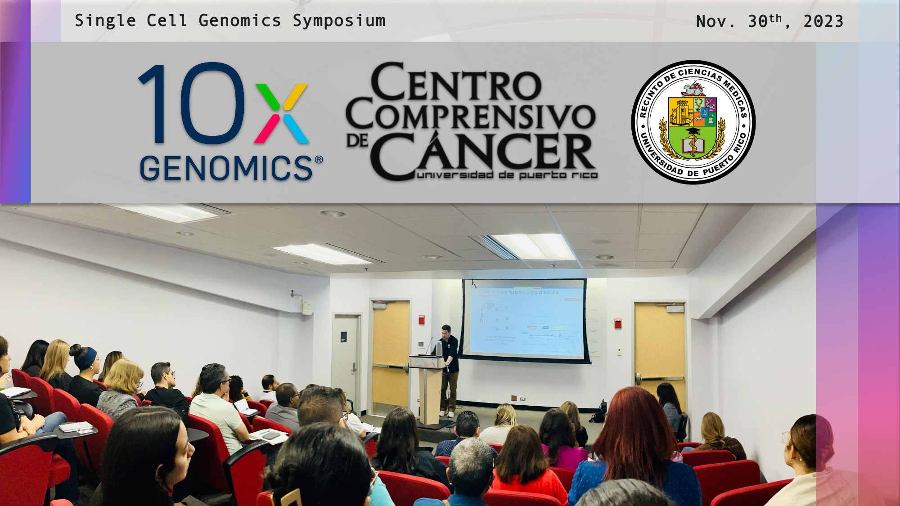
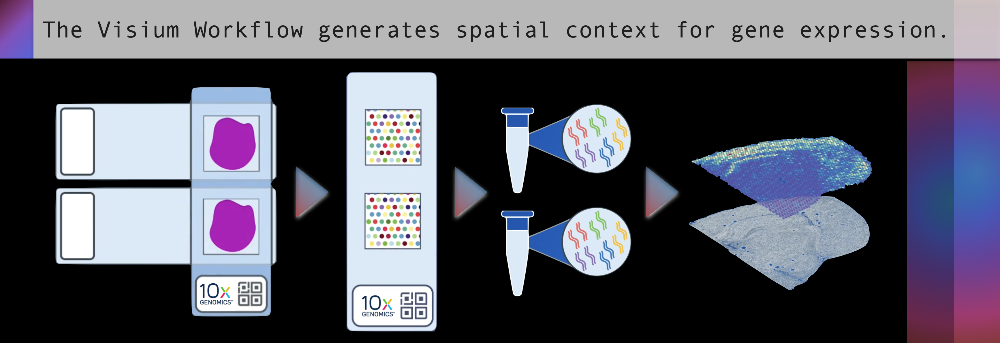
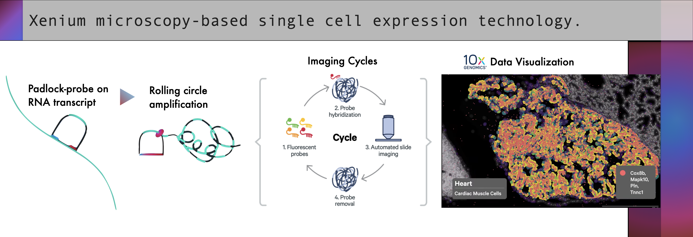

Breaking Boundaries of Biomedical Research in Puerto Rico with 10x Genomics
December 23, 2023 - Authored by: Paola N. Aponte-Castro | Osvaldo D. Rivera-González
10X Genomics (NASDAQ:TXG), the current industry leader of single-cell genomics solutions, has recently been noticeably active in Puerto Rico, hosting two distinct activities in the San Juan metropolitan area; a genomics workshop sponsored by the Molecular Sciences Research Center (MSRC) and a Single Cell Genomics Symposium at the Comprehensive Cancer Center of the University of Puerto Rico (CCC-UPR). The activities collectively highlighted the significance of comprehensive biological insights, stressing the need to understand the molecular biology of single cells to paint a more accurate picture of the natural complexity of tissues. The symposiums and workshops were centered on 10x Genomics' cutting-edge platforms—Chromium Single Cell, Visium Spatial, and Xenium In Situ— their unique contribution to emerging biological systems experimentation, namely to studying cell variations, adaptive immunity, biomarker detection, cell-specific epigenetic mapping, and spatial analysis of gene expression within tissue sections, all of which enable deeper context to cellular interactions.

Photo: The MSRC (left) and UPR-CCC (right) where 10X Genomics has hosted their recent activities.
Before further diving into the article, let me quickly summarize the 10X Genomics' flagship methodology, Chromium. In brief, the Chromium instrument workflow initiates with a suspension of individual cells or nuclei. Next, leveraging sophisticated microfluidics technology, the instrument meticulously encapsulates single cells or nuclei in individual oil droplets. This process, known as Gel Bead-in-Emulsion (GEM) technology, forms independent microreactors where each of the thousands of individual cells is enveloped within its own microenvironment alongside a gel bead containing reagents for barcoding and capturing genetic material. The optimized workflow that follows enables the construction of high-throughput libraries, preserving the genetic information from these individual cells, and empowering researchers to study cellular heterogeneity and diverse biological mechanisms at an unprecedented single-cell resolution.
The Single Cell Genomics workshop at the MSRC was held November 9th, and was sponsored by the Puerto Rico IDeA Network Biomedical Research Excellence (PR-INBRE) local NIH program. Two of the RIVERA-OMICS undergraduate research assistants, Damian Santiago-Muñoz and Emmanuel Franceschini-Rosado, attended the event with the primary objective of gaining critical insights into processing single-cell sequencing data and comprehending the evolving landscape of single-cell biology. Attending this workshop provided them with exposure to cutting-edge research techniques and valuable training opportunities, positioning them to integrate new methodologies into their lab work and stay abreast of advancements in the field. Of note, Dr. Nicolò Bellin, Computational Biologist at the MSRC, imparted the instructional workshop on how to handle single-cell data and provided the skeleton for an R-based pipeline to the workshop attendees.
As a computer scientist by training, I'm very motivated to expand my skills into the field of bioinformatics research, and Nicolò's workshop served to push me further into embarking on a path towards learning how to process data from cutting edge biotechnologies.
– Damian E. Santiago-Muñoz
Bioinformatics Research Trainee
RIVERA-OMICS
After concluding the event at MSRC, the lab received an invitation from John Walsh, current Southeast Sales Associate of 10X Genomics, to the Single Cell Genomics Symposium at the UPR-CCC, held on November 30th and led by distinguished experts focusing on the latest advancements in cancer research technologies. Upon learning about the symposium, the RIVERA-OMICS team quickly gathered up to discuss research student availability, since visiting the UPR-CCC would definitely prove to be of excellent exposure to the lab. Our lab’s Principal Investigator, Dr. Rivera, alongside 3 research students, Ian, Damian, and myself (Paola), met up at UAGM Cupey Campus and carpooled to the UPR-CCC the day of the symposium, discussing along the way the 10X Genomics technology and its impact to the scientific community.
Upon arrival, we were quickly greeted by Dr. Lauren Rowan, Sales Executive at 10x Genomics, as well as Mr. Walsh. Additionally, Dr. Rivera quickly sprung conversation with colleague Dr. Julie Dutil, current Director of the Puerto Rico OMIC Center (PROMIC) at the UPR-CCC, a collaborative effort to conglomerate resources aimed at performing state-of-art omics methodologies for investigators at the University of Puerto Rico System (UPR), the UPR-CCC, and colleagues at the public and private institutions. Dr. Dutil is also a leading investigator of breast cancer risk variants across historically underrepresented populations, as well as a PI in partnership grants with the likes of Moffitt Cancer Center (MCC), aiming to strengthen the Puerto Rican tumors biobank, and establish a network and infrastructure to reduce health disparities in the treatment of cancer in Hispanic patients.
During the inaugural seminar, Dr. Lauren Rowan, Sales Executive at 10x Genomics, highlighted the challenges associated with the limited representation of the Hispanic population in various research areas. She emphasized the 10X Genomics' fundamental mission to address current health disparities by providing innovative and accessible scientific tools to local investigators. Next, Dr. Julie Dutil, discussed the resources of the PROMIC at the UPR-CCC and how they are gearing up to enable 10X Genomics tools for basic science and clinical research in the island. Afterwards, Dr. Mote continued to emphasize 10x Genomics' commitment to accelerating advancements in health in his talk titled: Gain a Multidimensional View of Biology with Single Cell Solutions. The seminar focused on the Chromium X/iX, enabling single-cell analysis applicable in oncology, immunology, and neurosciences, with the iX marketed as a lower-cost alternative to facilitate entry into pilot studies and experiments with individual cells. It is a noteworthy approach, since iX is the same instrument as the X, limited only in assay throughput which can be addressed by a simple software update.

Photo: The Auditorium at the UPR-CCC was packed for the the Single Cell Genomics Symposium. At the podium is Dr. Ryan Mote, Science Technology Advisor at 10X Genomics, is imparting the leading seminar titled: "Gain a Multidimensional View of Biology with Single Cell Solutions" .
The 10X Genomics portfolio of instruments would be further clarified, by Dr. Leilani Marty-Santos, in a session that delved into spatial biology using Visium Spatial and Xenium In Situ instruments. These technologies allow for a three-dimensional analysis of the transcriptome in intact tissues, preserving morphology and providing valuable insights into spatial biology. The Visium platform stands out for its purpose in hypothesis generation capabilities, since it’s ideally used for transcriptome-wide spatial context. The development team has meticulously ensured mRNA compatibility through rigorous testing for optimal assay performance (mRNA score ≤ 7). The instrument, Visium CytAssist, streamlines the transfer of transcriptomic probes to Visium slides, broadening spatial profiling capabilities. Of note, Visium is compatible with both FFPE and fresh stained tissue section slides.

Figure 1: Visium Spatial Gene Expression Slide has thousands of barcoded capture-areas with lined with millions of probes to prepare a sequencing library with spatial information that can be directly used in standard high-throughput short-read DNA sequencing.
On the other hand, the Xenium platform directly identifies RNA targets within tissue sections; this approach offers researchers a detailed gene expression map while upholding the high sub-cellular resolution of microscopy studies. Using circularizable probes and enzymatic circular rolling amplification, Xenium generates targets for fluorescent probe hybridization in the Xenium analyzer. The instrument then cycles between capturing fluorescent microscopy images, followed by washing away each probe and reapplying the next, thus revealing the identities of thousands of RNA transcripts across individual cells in a tissue slice. Dr. Marty-Santos unveiled that future enhancements aim for simultaneous detection of RNA and proteins, promising deeper insights into complex expression.

Figure 2: The Xenium platform uses circular padlock-like probes to perform rolling circle amplification and in-situ probe imaging cycles. The analysis software performs high-powered computation on-instrument. Internal image sensor data is converted into ready-to-explore formats as soon your run finishes.
Just before lunchtime, Dr. Héctor Franco, Lead Investigator Division of Clinical and Translational Cancer Research and Co-Director of the Bioinformatics and Biostatistics Core, immersed the audience in the regulatory logic of cancer cells through single-cell multi-omics. Emphasis was placed on the importance of understanding diseases mechanisms of gene accessibility through the lens of single-cell ATAC sequencing. Dr. Franco highlighted how advanced technologies simplified the processes of sample collection, dissociation, and cell treatment, improving research efficiency. Although briefly mentioned, CRISPR technology will be a potential area for future development, especially in integrating genetic editing techniques with 10x Genomics technologies.
In summary, the symposium provided an unparalleled opportunity to understand how these cutting-edge platforms could revolutionize research across domains like cancer, immunology, neuroscience, and developmental biology, allowing scientists to explore biology with unprecedented depth and precision. Furthermore, it highlighted the imperative need to address challenges in Hispanic representation within biomedical research. It emphasized the fundamental role played by the innovative technologies introduced by 10x Genomics in reshaping our understanding of cellular and spatial biology. After all the conferences, we were offered the valuable opportunity to interact with experts such as Dr. Héctor Franco and Dr. Julie Dutil. Encouragement was given to maintain ongoing communication for possible collaborative activities, with a brief insightful period allowing for direct assessment of their perspectives within the field.
The RIVERA-OMICS lab had a wonderful time at the symposium. It was a great opportunity to learn about new technologies, listen to amazing science, make new connections and briefly reconnect with colleagues.
Authored by:
About RIVERA-OMICS:
OMICS (Omics Molecular Innovations and Commercialization Strategies), is an entity built to develop omics-focused academic research projects and investigate the commercial landscape of novel biotechnologies and biomedicines. OMICS is a branch of RIVERA Initiatives Inc, a non-profit organization that seeks to empower academia through comprehensive resources and collaborative research endeavors to advance educational excellence and innovation.
For inquiries, please contact:
research@riveraomics.org